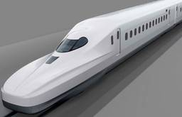
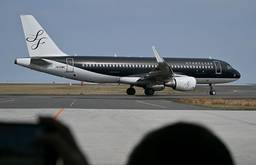
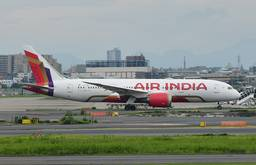

Aviation Wire
https://www.aviationwire.jp
航空経済紙「Aviation Wire」は、航空機やエアライン、空港、官公庁に関する情報や各種統計などをお届けして参ります。
フィード
日英伊GCAP次期戦闘機 トリノに初の開発拠点が1位 先週の注目記事26年10月11日-17日
Aviation Wire
10月11日から17日までによく読まれた記事をまとめました。一番読まれたものは、日英伊3カ国による次期戦闘機の共同開発計画「GCAP」で、イタリア北部トリノに初の開発拠点が開設された記事でした。 第1位 日英伊GCAP […]
38分前
パスポート発給160周年 JAL歴代制服CAとパスポくんがPR、保有率2割未満
Aviation Wire
日本航空（JAL/JL、9201）は10月17日、パスポート発給160周年を記念するイベントを羽田空港第1ターミナルで開いた。パスポートを管轄する外務省とともに、福岡行きJL319便（エアバスA350-900型機、登録 […]
18時間前
米海軍、戦略通信機E-130J向けC-130J-30初受領 E-6B後継機に改修
Aviation Wire
米海軍は現地時間10月16日、次期戦略通信機E-130J「フェニックスII」のベースとなるC-130J-30「スーパー・ハーキュリーズ」の改修対象初号機を、15日に受領したと発表した。ロッキード・マーチン（LM）が製造 […]
1日前
東海道・山陽新幹線、上級クラス専用待合室 27年12月に品川など5駅
Aviation Wire
JR東海（東海旅客鉄道、9022）とJR西日本（西日本旅客鉄道、9021）は10月16日、東海道・山陽新幹線の最上位クラス「Supreme Class（スプリームクラス）」とグリーン車の利用客向けに、専用待合室を主要駅 […]
1日前

東海道・山陽新幹線、新型「S0系」29年7月投入 グリーン車刷新や自動運転
Aviation Wire
JR東海（東海旅客鉄道、9022）は10月16日、東海道・山陽新幹線に投入する次期新幹線車両「S0系」の製作を決めたと発表した。2020年7月に営業運転を開始したN700S系以来の新型車両で、運転士が乗務する自動運転シ […]
1日前

26年1-3月期、スターフライヤー定時出発・到着首位 90％超え1社のみ＝国交省情報公開
Aviation Wire
国土交通省航空局（JCAB）は、全日本空輸（ANA/NH）や日本航空（JAL/JL、9201）、LCC 3社など、特定本邦航空運送事業者10社に関する「航空輸送サービスに係る情報公開」の2026年1-3月期分を公表した […]
2日前
737MAX、ターキッシュエアから100機受注 納入2機増57機＝ボーイング9月実績
Aviation Wire
ボーイングの2026年9月の引き渡しは、前年同月比2機増の57機だった。受注は69機増の165機で、主力小型機の737 MAXをターキッシュエアラインズ（旧称トルコ航空、THY/TK）から100機受注した。競合のエアバ […]
2日前
大韓航空、契約CA募集 27年4月以降入社、日本4空港拠点
Aviation Wire
大韓航空（KAL/KE）は10月15日、日本国内の4空港を拠点とする客室乗務員（CA）を募集すると発表した。成田、関西、中部、福岡の4空港で、契約制として募集する。募集期間は28日までで、入社時期は2027年4月以降の […]
2日前
ピーチ、CA制服をアップサイクル 1点ものキャンバスは限定100枚
Aviation Wire
ピーチ・アビエーション（APJ/MM）は10月16日、客室乗務員（CA）の制服生地をアップサイクル（作り替え）した商品2種類を発売した。旧制服を加工したものと、新旧制服の生地を使ったものを用意する。同日午後1時から、公 […]
2日前

エア・インディア、関空－デリー27年2月就航 787-8で週4往復
Aviation Wire
エア・インディア（AIC/AI）は現地時間10月15日、デリー－関西線の直行便を開設すると発表した。2027年2月2日から週4往復運航する。同社によると、エア・インディアはデリー－大阪間をノンストップで結ぶ唯一の航空会 […]
2日前